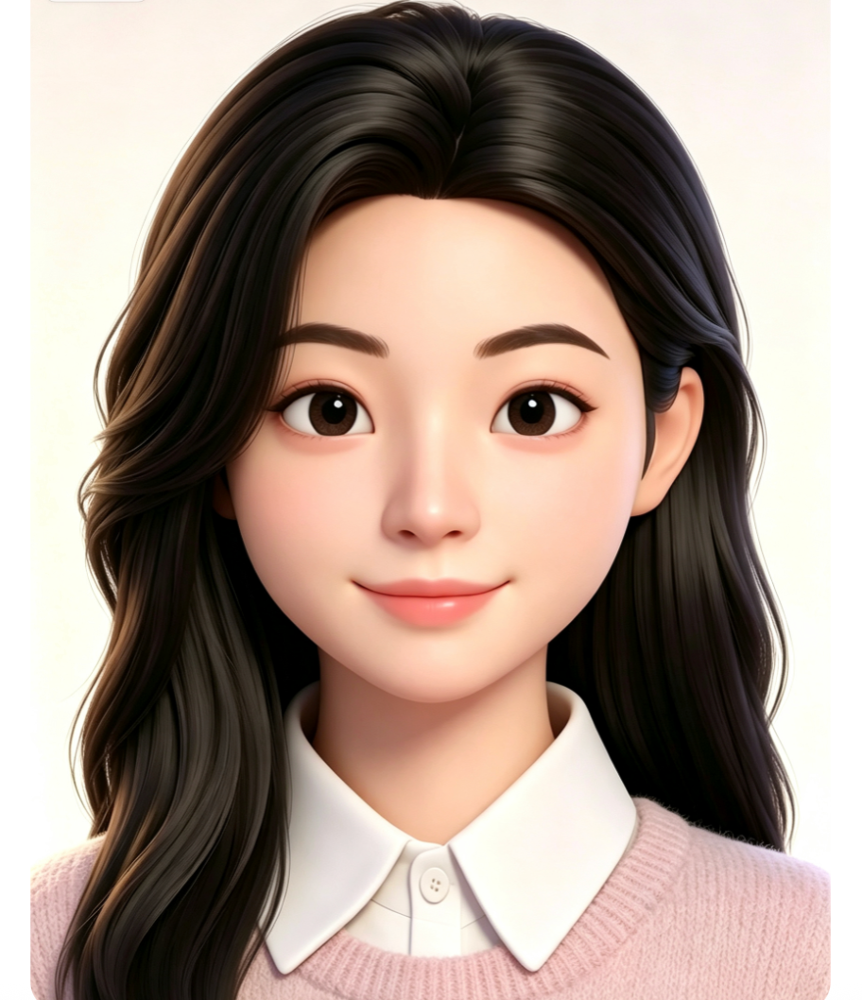

Roles from 2021 to now — select any to read the full story
Four concentrated skills — the through-lines I carried across every role, powered by an AI toolchain
Select any project to read the full case study
I sit at the crossroads of people, AI & growth — making complex products feel simple, and turning insight into motion.
I'm Kelly Ou, an AI Product Operations & Overseas Marketing professional. I've shipped creator ecosystems from zero to one, cold-started overseas AI communities, and launched UGC campaigns across Japan / Europe / the US. Multilingual, design-minded, metrics-driven.
Building an AI product that needs a growth engine, a community that needs a voice, or a brand that needs a story? I'd love to hear from you.
Email oukelly@gmail.com → Phone +86 139 2772 5916 → LinkedIn linkedin.com/in/kellyouxuyi →M.A. Social Science · New Media
B.A. · French & Psychology
AI product operations · growth & go-to-market · community & campaign strategy. Based in Shenzhen & Hong Kong, working globally.